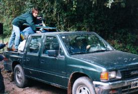
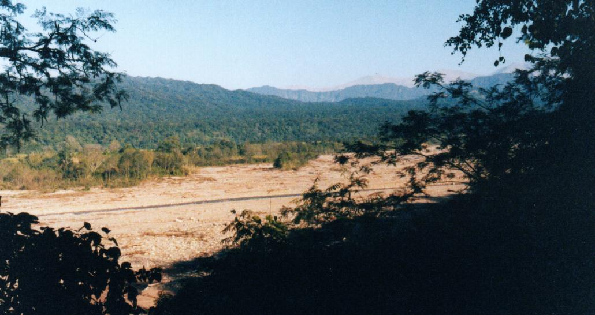

Domingo 22 de Julio de 2000 a las 8:00 Antes que amaneciera, dejamos la ruta principal para internamos unos pocos kilómetros hacia el oeste por un camino de tierra, para llegar hasta la entrada del Parque Nacional. Mirando por las ventanillas delanteras veía como la densa vegetación que bordeaba el camino demarcaba un estrecho túnel. Nos abríamos paso lentamente por este caño de vegetales, iluminado por los fuertes faros. El parque estaba cerca, y presentía como la misteriosa selva devoraba a nuestro vehículo. Esperaba en cualquier momento la sorpresiva aparición del Jaguar que había imaginado. Pero desconocía que a ambos lados de este camino demarcado por arboles ya no quedaba selva: solamente había estériles plantaciones de caña de azúcar. El avance fue muy lento, para no causar daños al gran ómnibus, pero finalmente llegamos al destino. Pudimos leer, incrédulos, el ansiado cartel: "Bienvenidos al Parque Nacional Calilegua". Nada hubiera superado nuestro asombro y emoción – a no ser "Bienvenidos al Parque Jurásico". Pronto cambiaría radicalmente la actividad del grupo. Moviendonos como osos que salen perezosamente de su letargo invernal, nos pusimos calzado y abrigo, buscamos las mochilas dispersas en asientos vecinos y guardamos los enseres utilizados durante el viaje. Mentalmente nos preparamos para comenzar la vida de campamento.  Las puertas del mico se abrieron. La procesión bajó y miró. Respiramos el fresco aire Yungueño. Las bauleras también se abrieron, y comenzamos todos a ayudar con la descarga de su variado contenido: bolsa de cebollas por aquí, carpas y bolsas de dormir por allá, gigantescas ollas, garrafas, mesita, banquitos, bolsa de naranjas, carpas y más carpas. Y la guitarra. Todo fue apilado en una camioneta que realizó varias veces el corto trayecto desde la playa de estacionamiento hasta el sitio de acampe, a unos 300 o 400 metros. En uno de estos viajes el montón de objetos cargados era tan inestable que Germán tuvo que acompañar la carga oficiando de efectivo "pulpo humano".El montón de mochilas y carpas yacía ahora en una gran
pila en el centro de la zona de acampe. Quince minutos después casi
todo había sido reclamado por sus respectivos dueños, quienes
se decidían por un lugar adecuado para la carpa. Aproximadamente en el centro del predio estaba el fogón y tres mesas de madera con banquetas. Cerca de allí se instaló la gran "Carpa Cocina". Todo este sector pronto pasaría a ser nuestro lugar de encuentro social, donde compartiríamos las comidas, las charlas y oiríamos los anuncios organizativos. En uno de los flancos más elevados estaban las instalaciones sanitarias, construidas en material: adentro los baños, y afuera 4 piletas para lavar los platos. Aquí estaban los bidones con agua potable. No había agua caliente ni tomacorrientes. Nos quedaríamos en este lugar durante cuatro noches, lo que nos daría más de cuatro días completos para recorrer el parque. Luego, el Jueves, partiríamos hacia Tilcara. Recordaré siempre esa primera vista matinal, mirando hacia el sudoeste desde la barranca que daba sobre el ancho y pedregoso valle del San Lorenzo. El sol, que comenzaba ya a asomar sobre los cerros ubicados a mi espalda, pintaba las distantes colinas y montañas selváticas de verdes y dorados. La llegada de la luz diurna al valle creaba un gran contraste lumínico: más cerca estaba la fría oscuridad de las partes aún en sombra, y más lejos, la intensa y enceguecedora claridad donde daban los rayos directos. Al elevarse el sol, los sectores iluminados del valle se acercaban, desplazándose lentamente sobre las piedras multicolores. Daba la impresión que manos invisibles estaban retirando una gran colcha gris oscura, exponiendo ahora las piedras que quedaban tan intensamente iluminadas que se veían casi blancas, apenas tonalizadas de lilas y rosas.  El valle del San Lorenzo desde el camping Pero el campamento, húmedo y frío, aún estaba en zona de sombra. Costaba dejar la seductora calidez visual del paisaje, pero debíamos ocuparnos ahora de la carpa... Tras deliberar con mi hijo, elegimos un sitio bastante plano. Nos adueñamos entonces del lugar. Por cuatro días éste territorio sería nuestro, y solo nuestro. Acercamos nuestro equipaje a la nueva base, apilando los bultos desprolijamente, y comenzamos a tender la carpa. Había transcurrido ya un año desde que la pusimos por última vez, en Misiones, y al comenzar el tendido recordé con emoción aquella oportunidad. La carpa era un clásico modelo "canadiense", a dos aguas, baja, angosta y corta. No sería problema armarla, pero no entendíamos cómo cabría esa inmensa pila de equipaje, cuyo volumen parecía duplicar el espacio interno de la carpa. ¡Y mejor ni pensar como iban a entrar aquí sus ocupantes! Comenzamos a introducir los enseres, redoblando el ingenio para encontrar un orden o secuencia de inserción que funcione. Pero tras varios intentos de resolver este rompecabezas tridimensional, abandonamos. La única solución posible sería estibar una parte importante de nuestro equipaje - aquello que tendría menos uso - en la "carpa cocina". ¿Cuánto dejamos ahí? Digamos... ¿Tres valijas? No obstante haber logrado esta asombrosa ganancia de espacio a total beneficio de los ocupantes, no quedó mucho lugar libre. La vida en el confinado interior puso a prueba reiteradamente nuestra resistencia a la claustrofobia. Limitado por paredes de paño que se resistían a ceder, por una altura del techo más apropiada para duendecitos, y acosados por montones de artículos, todos categorizados como "vitales" y "prioridad uno", el acalambrado interior de la carpa se convirtió en un permanente barullo. Cuando no estábamos durmiendo, seguramente estábamos revolviendo entre montones de prendas en busca de tal o cual parte del mobiliario. Sin exagerar, cada vez que nos propusimos buscar un artículo allí dentro, el contenido de la carpa parecía convertirse en fluido, en tanto que nuestros frenéticos movimientos de brazos daban comienzo a un violento torbellino, similar al que ocurre en el interior de un lavarropas con tambor de carga horizontal. La tenue luz interior tampoco ayudaba: "¿Viste mi polar?" "No, pero aquí está el desodorante que buscamos desde hace días". De noche, la oscuridad dificultaba aún más la búsqueda, sobre todo cuando lo que buscábamos era justamente la linterna... "¡¡¡Dónde está la linterna!!!". Cada vez que salíamos de la carpa debíamos montar un intrincado y tedioso procedimiento, más complejo que el utilizado por astronautas en cápsula espacial: "Voy a salir afuera, así que corré tu bolsa, pasame mi campera, teneme mis binoculares, mové tu mochila y el buzo, tirá la otra mochila para atrás, no aplastes la cámara, cuidado con ese tenedor, tené esta media y a ver si puedo salir ahora..." Reconocí fácilmente y por primera vez al Arañero Corona Rojiza, un pequeño pajarito confiado, de colores impactantes, y sumamente frecuente en Calilegua. A pesar de la infinidad de veces que lo vimos durante esa semana, nunca me dejó de atraer la alegría de sus movimientos y el vistoso colorido compuesto de tonos bien saturados. Sin embargo, sabía que no me esperaba una jornada fácil: entrar en contacto con tantas aves nuevas y desconocidas, tratando de recordar todo lo visto, iba a poner seriamente a prueba mis defensas anti-estrés. Pero me alentaba un canto que escuchaba repetidamente y que conocía bien: el de un Chinchero, que trepaba en espiral por los troncos de los arboles del camping. Aún no eran las 9:30 de la mañana y ya nuestro heroico cocinero, Facundo, había preparado el desayuno. El café calentito vino muy bien, y supimos evitar de quemarnos al tomar del tazón de chapa, y de evadir los espantosos grumos que deja la leche en polvo cuando no se sabe bien como prepararla. Acompañamos con deliciosas rodajas de pan con manteca y dulce. Celebrábamos el triunfo de tener la carpa armada, pero no nos podíamos dormir en los laureles, por que los guías convocaban ya a los inquietos aficionados a iniciar la primera recorrida ornitológica, aprovechando la mejor hora matinal. Pero antes debíamos volver a la carpa para buscar diversos enseres: repelente de insecto, cámara, rollos de foto, etc. Pero... ¿Dónde estarán? ¿Los hallaríamos sin demora? Para resolver en tiempo récord semejante desafío de búsqueda en el amontonado interior no quedaba otra que utilizar "Centrifugado"... * * * |